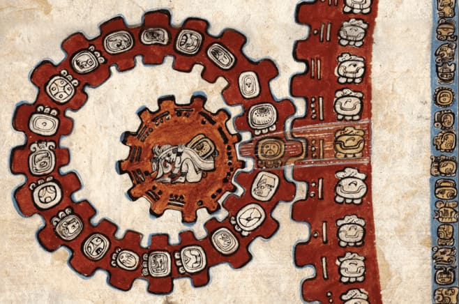

Calendario Mayas
Había dos calendarios que tenían los mayas, el de solar, Haab y el de los lunares Tzolk'in, sirven para registrar el tiempo, pero también le daba un nombre a las personas y su destino, dependiendo el día y el número podía decir si era bueno o malo. Combinan ambos calendarios para complementar los 52 años, cuando terminaron esos años, se apagaban todos los fuegos y se encendian un fuego nuevo.
Astronomía Maya
Los mayas observaban los cielos, analizaban la posición de los astros para poder predecir el futuro, entre ellos la venida del eclipse, porque creían que venían tiempos malos como la hambruna y las guerras, para ellos ofrecían sangre al Dios Sol para combatir el bien cotra el mal.
Matemáticas Mayas
Son el pueblo mesoamericano con un sistema númerico que utilizaron tres signos: barras, puntos y cero que es representado con el caracol, usaron los signos hasta llegar el número 20.